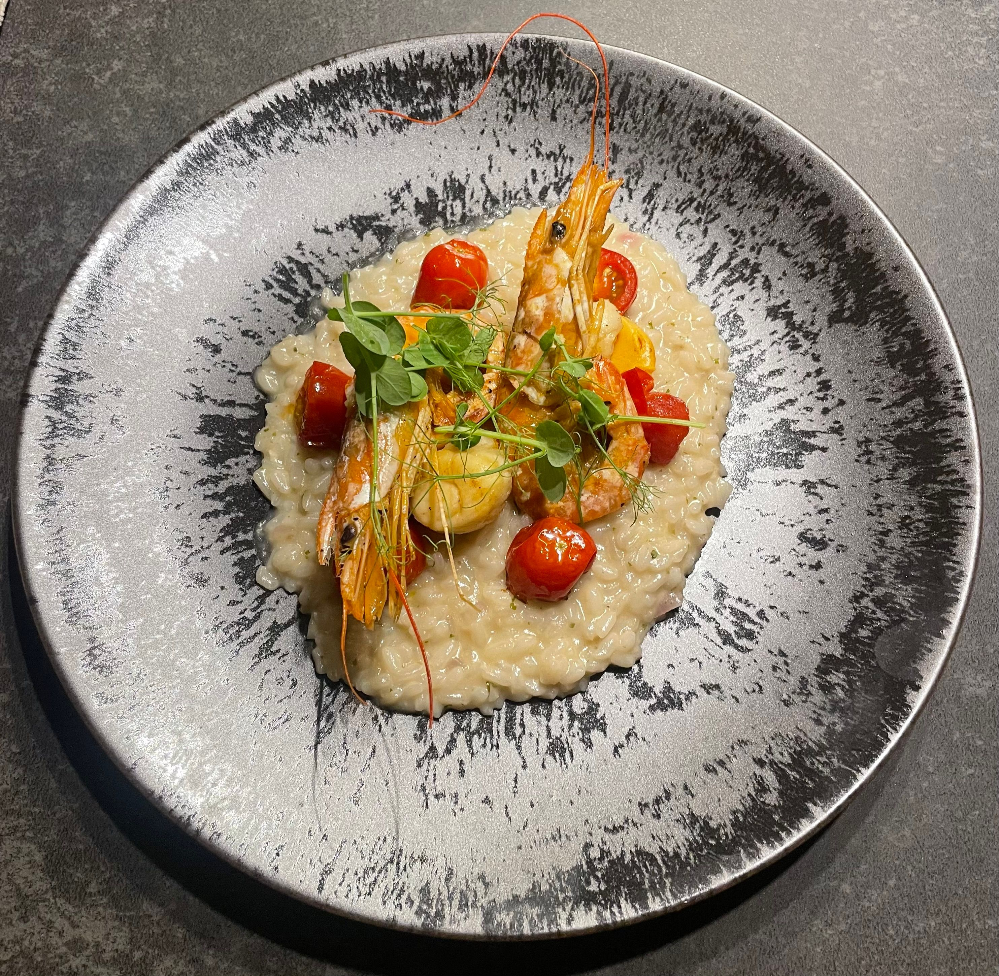

Home
Shrimp and rice recipe

Description
Juicy lemony shrimp nestled in fluffy herby and cheesy jasmine rice is a
great weeknight dinner option that's light yet filling—and all cooked in
one-pan.
Ingredients
- 5 tablespoons unsalted butter, divided
- 1 yellow onion, finely chopped
- 6 cloves garlic, finely chopped
- 1/4 cup dry white wine
- 2 cups chicken stock
- 2 teaspoons lemon zest
- 1 1/2 teaspoons kosher salt
- 1 pound medium peeled, deveined raw shrimp
- 1 tablespoon freshly squeezed lemon juice
- 1/2 cup freshly grated Parmesan cheese
Steps
- Gather the ingredients.
-
Melt 1 tablespoon butter in a large nonstick skillet over medium. Add
onion, and cook, stirring occasionally, until soft and translucent,
about 3 minutes. Add garlic, and cook, stirring constantly, until garlic
is fragrant and onions are lightly browned, about 1 minute. Stir in
wine, and cook, stirring occasionally, until wine is reduced by half,
about 3 minutes
-
Stir in chicken stock, lemon zest, salt, and black pepper. Bring to a
boil over medium, and stir in rice. Cover and reduce heat to low.
Simmer, undisturbed, until rice is just cooked through, 9 to 10 minutes.
Add shrimp to rice in an even layer; drizzle with lemon juice, and dot
with remaining 4 tablespoons butter. Cover and continue to cook over
medium until shrimp and rice are cooked through, 5 to 6 minutes.
-
Remove from heat. Stir in Parmesan cheese and basil. Garnish with lemon wedges and basil leaves.
-
Slowly pour in milk, while constantly stirring; cook and stir until
mixture is smooth and bubbling, about 5 minutes, making sure the milk
doesn’t burn.
- Serve hot and enjoy!